Making an existing class with an incompatible interface usable by a client, without changing either, is the:
- Adapter pattern
- Facade pattern
- Composite pattern
- Observer pattern
Show answer
A. Adapter pattern
Structural patterns deal with how existing classes and objects are put together. Adapter converts the interface of an existing class (the adaptee) into the interface a client expects (the target), either by wrapping it (object adapter) or by inheriting from it (class adapter). Composite arranges objects into part–whole trees so that a client can treat a single leaf and a whole group the same way. Facade puts one simple, higher-level interface in front of a complicated subsystem.
Client → Target interface ← Adapter → Adaptee. The adapter translates calls; the adaptee is unchanged. Example: BirdAdapter makes a Sparrow act as a ToyDuck.
Object adapter holds an adaptee (composition, run time); class adapter inherits from it (compile time, needs multiple inheritance). Object adapter is preferred.
Component interface; Leaf implements it; Composite implements it and holds a list of Components, forwarding each call to its children.
One class (ShopKeeper) offers simple task methods (iphoneSale()) and calls the subsystem classes for the client.
Final 252 Q7-1 (2.5 marks) asked you to recognise Composite in a file explorer (files and nested folders, total folder size) and draw its class diagram. Expect Adapter and Facade as “which pattern?” questions and as a comparison (Adapter converts an interface; Facade simplifies a subsystem).
Every original slide is shown unchanged. Yellow marks on a slide point to a numbered note: hover or tap a mark to jump to its note, and hover a note to see its marks. Questions tagged Past exam appeared on a real paper; Prediction questions are likely angles, not confirmed.
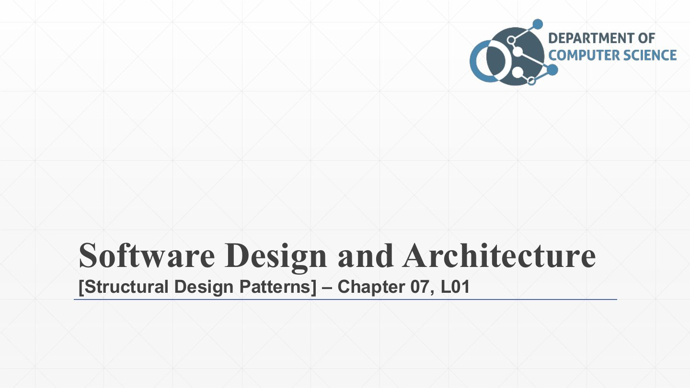
Chapter 7 moves from creating objects to structuring them. Lecture 1: three structural patterns. Lecture 2: behavioural patterns.
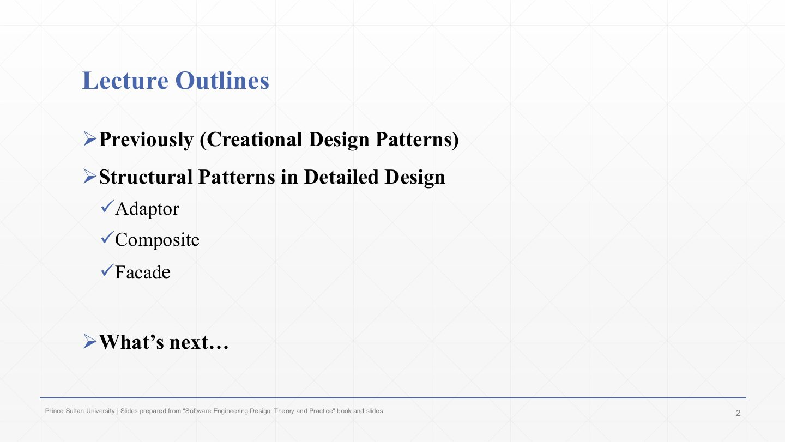
Previously: the creational patterns (Abstract Factory, Factory Method, Builder, Singleton).
Today: Adapter, Composite and Facade.
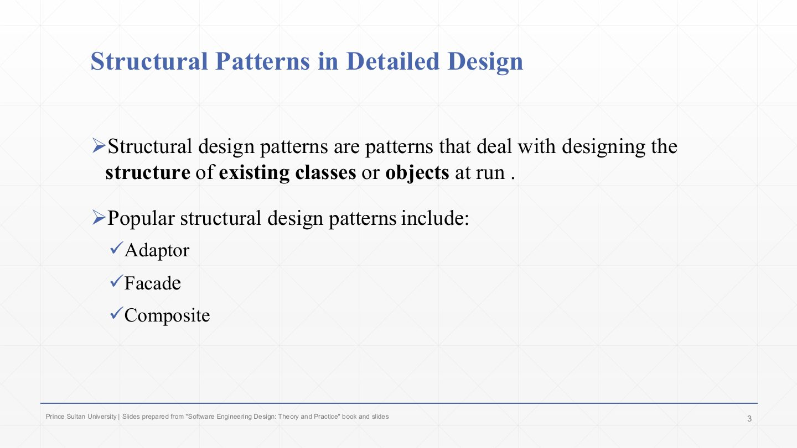
Structural patterns deal with designing the structure of existing classes or objects: how they are connected and combined, so parts fit together or present a simpler boundary.
The three here: Adapter (make incompatible interfaces fit), Facade (simplify a subsystem) and Composite (build part–whole trees).
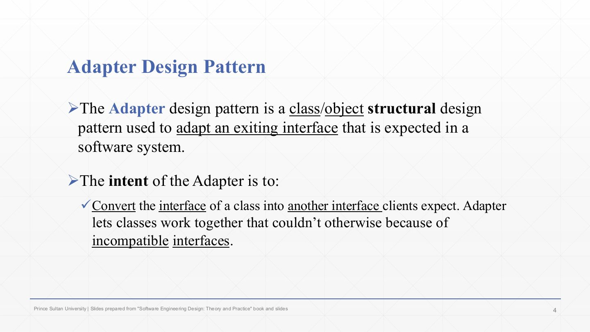
Adapter is a class or object structural pattern (it has both variants) used to adapt an existing interface to the one a system expects.
Its intent: convert the interface of a class into another interface that clients expect. Adapter lets classes work together that otherwise couldn’t because their interfaces are incompatible. Think of a travel plug converter: the device and the socket don’t change; the converter between them does the fitting.
Making an existing class with an incompatible interface usable by a client, without changing either, is the:
A. Adapter pattern
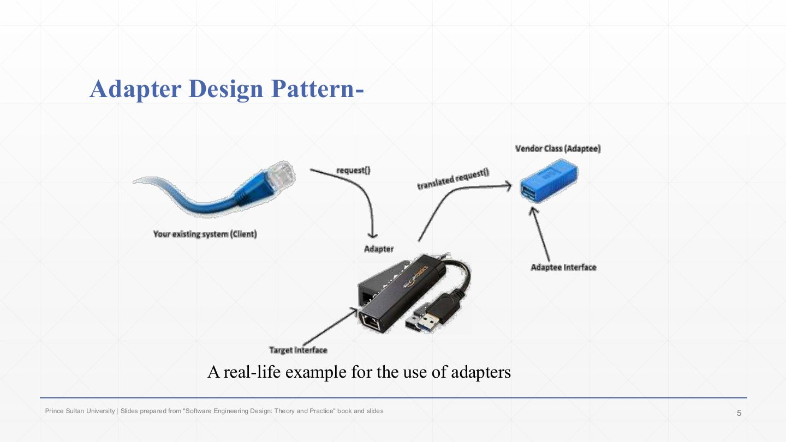
The real-life version: your existing system (the client) has an Ethernet cable and sends its request().
The adapter (an Ethernet-to-USB dongle) offers the target interface the cable expects, and passes on a translated request().
The vendor class (adaptee) only understands its own adaptee interface (USB). Neither the cable nor the USB port changed; the adapter did the translation.
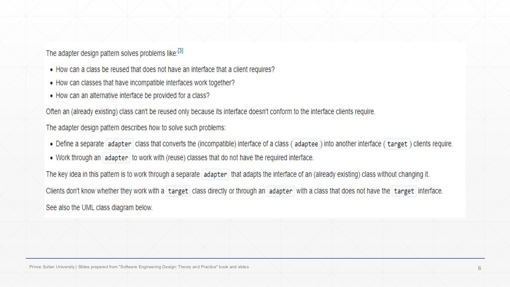
The problems Adapter solves: how can a class be reused when it doesn’t have the interface a client requires? How can classes with incompatible interfaces work together? How can an alternative interface be provided?
The solution: define a separate adapter class that converts the (incompatible) interface of a class (the adaptee) into the interface clients require (the target). Clients work through the adapter and don’t know whether they are talking to a target directly or through an adapter.
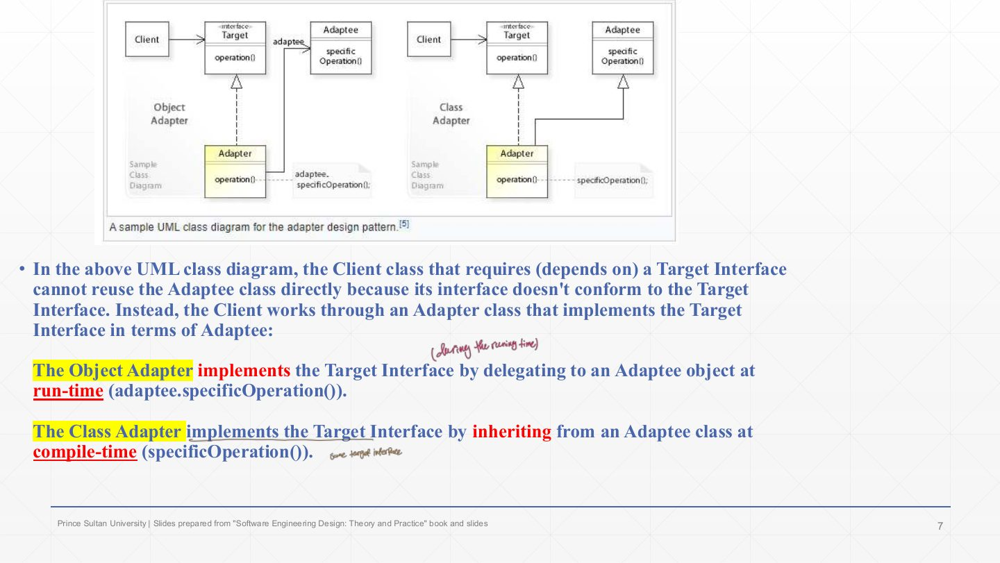
The UML: the Client depends on a Target interface; it can’t use the Adaptee directly because the adaptee’s interface doesn’t conform. The Adapter implements Target in terms of Adaptee.
Object adapter (left): implements Target by delegating to an Adaptee object held in a field, at run time (adaptee.specificOperation()).
Class adapter (right): implements Target by inheriting from the Adaptee class, at compile time (specificOperation() is called on itself).
What is the difference between an object adapter and a class adapter?
An object adapter holds a reference to an adaptee object and delegates to it (composition, decided at run time). A class adapter inherits from the adaptee class and implements the target (inheritance, fixed at compile time; needs multiple inheritance of classes, which Java lacks). Object adapters are preferred.
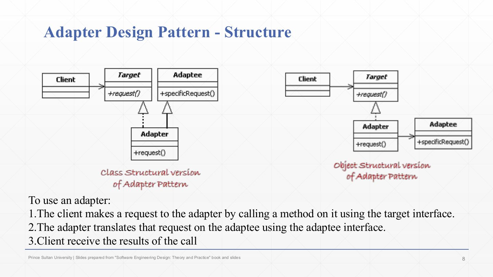
Class version (left): Adapter inherits from both Target and Adaptee (two hollow triangles) and its request() calls the inherited specificRequest().
Object version (right): Adapter realises Target and has an association arrow to an Adaptee object; its request() calls adaptee.specificRequest().
To use an adapter: (1) the client calls a method on the adapter through the target interface; (2) the adapter translates it into calls on the adaptee interface; (3) the client gets the results, never knowing an adaptee was involved.
In the Adapter pattern, the existing class with the incompatible interface is called the:
A. Adaptee
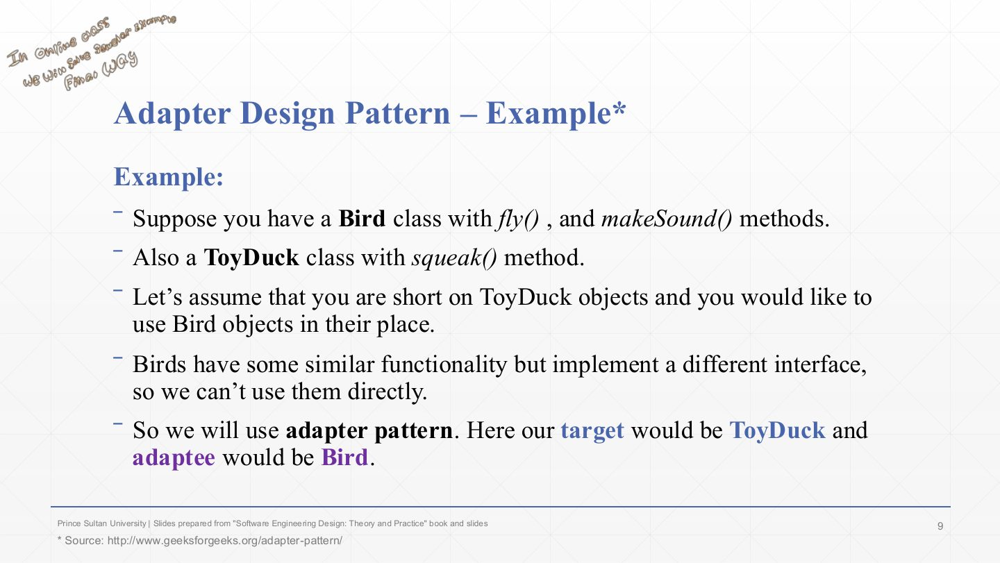
The example (from GeeksforGeeks): a Bird class with fly() and makeSound().
A ToyDuck with squeak().
We are short on ToyDuck objects and want to use Birds in their place. Birds behave similarly but have a different interface, so they can’t be used directly.
So: target = ToyDuck, adaptee = Bird, and a BirdAdapter in between.
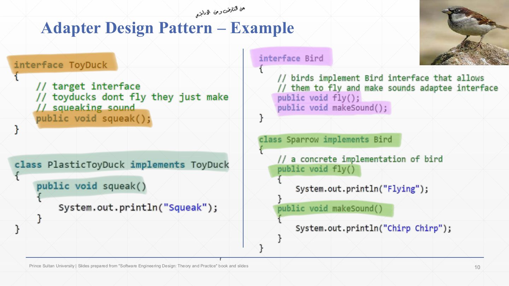
The existing code:
| Code | What it does |
|---|---|
interface ToyDuck { public void squeak(); } | The target interface: toy ducks don’t fly, they just squeak. |
class PlasticToyDuck implements ToyDuck { public void squeak() { System.out.println("Squeak"); } } | A normal toy duck. |
interface Bird { public void fly(); public void makeSound(); } | The adaptee interface: birds fly and make sounds. |
class Sparrow implements Bird { fly() { …"Flying"… } makeSound() { …"Chirp Chirp"… } } | A concrete bird. |
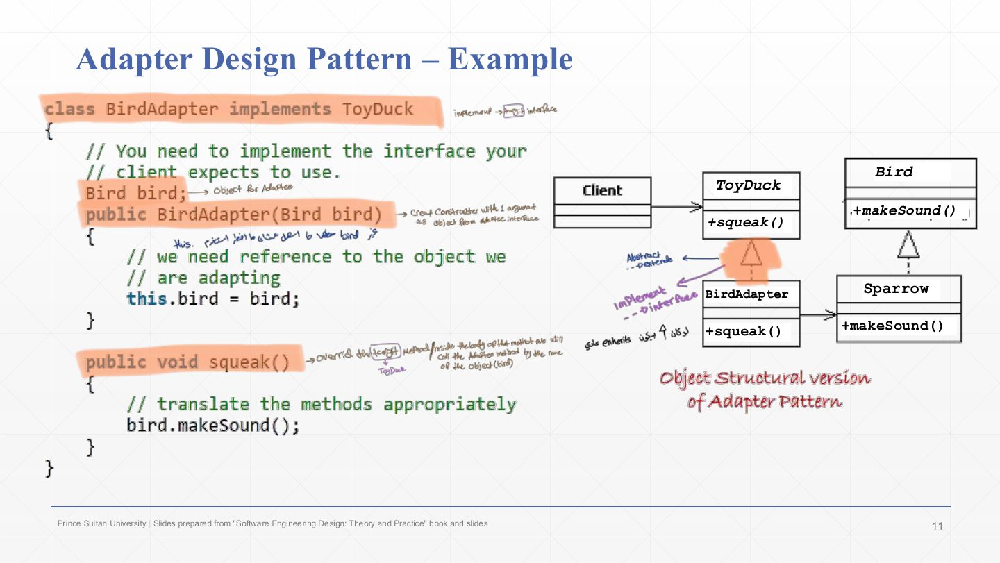
The adapter:
| Code | What it does |
|---|---|
class BirdAdapter implements ToyDuck { | Implements the interface the client expects (ToyDuck). |
Bird bird; | Holds a reference to the object being adapted (object adapter). |
public BirdAdapter(Bird bird) { this.bird = bird; } | The bird to adapt is passed in. |
public void squeak() { bird.makeSound(); } } | Translates the target call into the adaptee call. |
The UML on the right: Client → «ToyDuck» ← BirdAdapter (realization) → Bird ← Sparrow: the object structural version of the pattern.
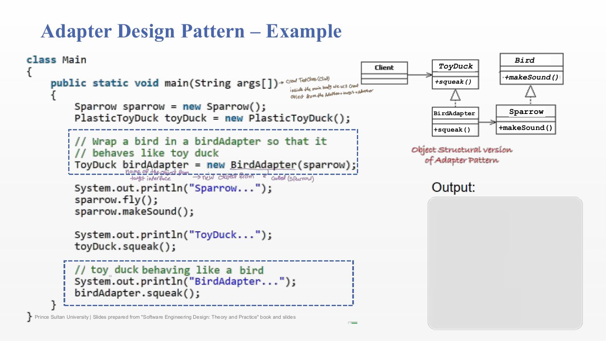
The client:
| Code | What it does |
|---|---|
Sparrow sparrow = new Sparrow(); PlasticToyDuck toyDuck = new PlasticToyDuck(); | A real bird and a real toy duck. |
ToyDuck birdAdapter = new BirdAdapter(sparrow); | Wrap the bird so it behaves like a toy duck. |
sparrow.fly(); sparrow.makeSound(); toyDuck.squeak(); | Prints “Flying”, “Chirp Chirp”, “Squeak”. |
birdAdapter.squeak(); | A ToyDuck call that prints “Chirp Chirp”: the toy duck is behaving like a bird. |
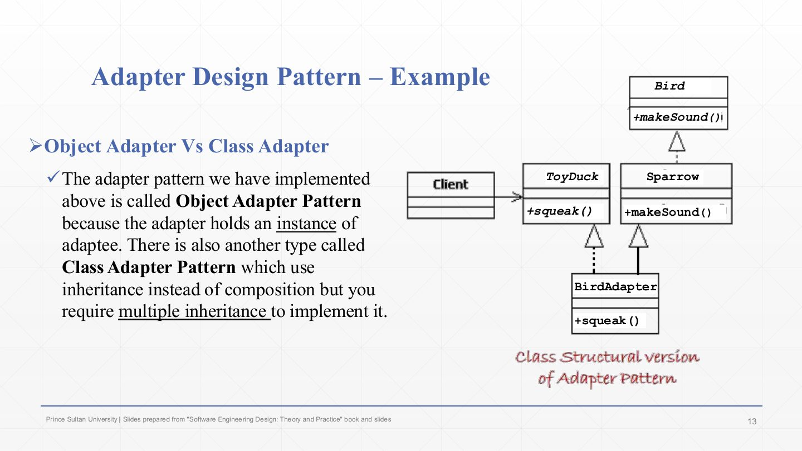
The version just built is the object adapter, because the adapter holds an instance of the adaptee.
The alternative, the class adapter, uses inheritance instead of composition, which requires multiple inheritance: BirdAdapter would extend Sparrow and implement ToyDuck (the diagram on the right).
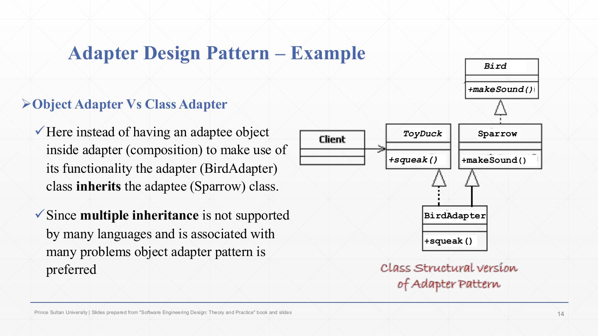
In the class adapter, BirdAdapter inherits the adaptee (Sparrow) instead of containing it, and calls the inherited makeSound() inside squeak().
Because many languages don’t support multiple inheritance of classes (and it causes problems where they do), the object adapter is preferred. In Java this one case works only because ToyDuck is an interface.
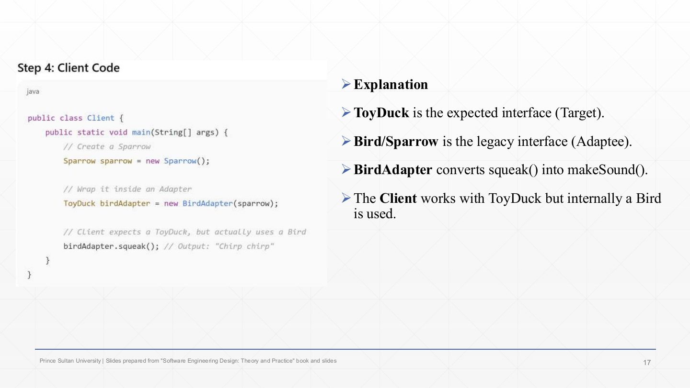
The client again: create a Sparrow, wrap it in a BirdAdapter, and call birdAdapter.squeak(), which outputs “Chirp chirp”: the client expects a ToyDuck but actually uses a Bird.
ToyDuck is the expected interface (target); Bird/Sparrow the legacy interface (adaptee).
BirdAdapter converts squeak() into makeSound(); the client works with ToyDuck while a Bird is used internally.
In the ToyDuck/Bird example, name the target, adaptee and adapter, and say which method call is translated.
Target: ToyDuck. Adaptee: Bird (Sparrow). Adapter: BirdAdapter, which implements ToyDuck and holds a Bird. Its squeak() calls bird.makeSound().
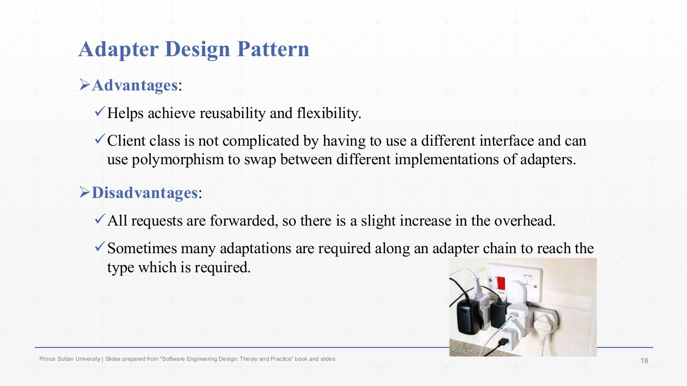
Advantage: reusability and flexibility: existing classes are reused without modification.
Advantage: the client isn’t complicated by a different interface and can use polymorphism to switch between different adapters.
Disadvantage: every request is forwarded, so there is a slight overhead.
Disadvantage: sometimes a chain of adapters is needed to reach the required type (like the stacked plug adapters in the photo).
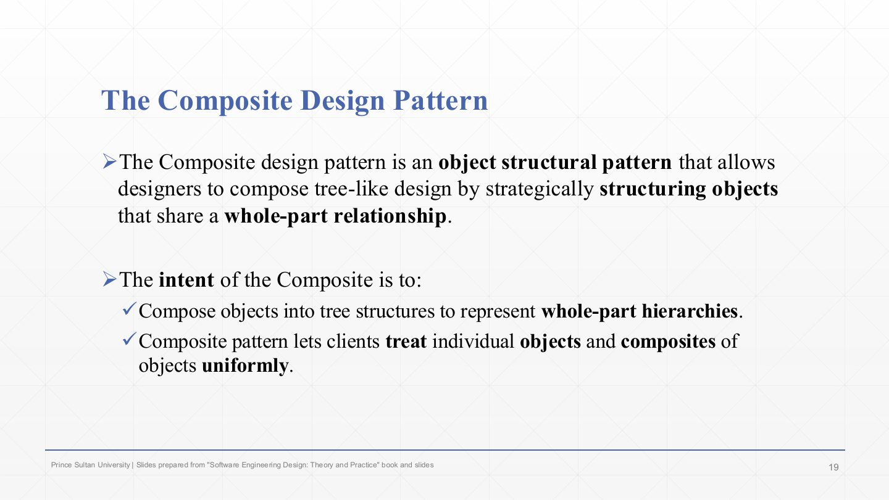
Composite is an object structural pattern for tree-like designs of objects that share a whole–part relationship.
Intent (1): compose objects into tree structures to represent whole–part hierarchies.
Intent (2): let clients treat individual objects and compositions of objects uniformly: the same call works on one item or a whole group.
File explorer: Files (leaf, with a size) and Directories (contain files and other folders, nested to any depth). Calculate a folder’s total size. Which pattern? Draw its class diagram.
Pattern: Composite. Treat single files and whole folders the same way through one interface. FileSystemItem (component, abstract or interface): getSize(). File (leaf): returns its own size. Directory (composite): holds a list of FileSystemItems with add()/remove(); its getSize() sums child.getSize() for every child, which recurses into sub-folders to any depth. Diagram: File and Directory both inherit from FileSystemItem; Directory has a composition/aggregation to FileSystemItem (0..* children).
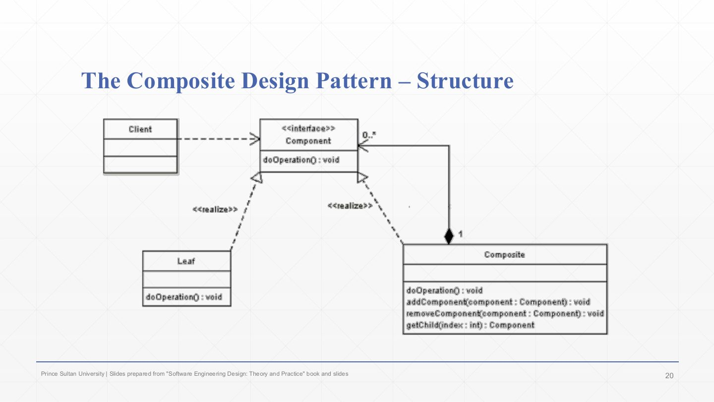
«interface» Component declares the common operation (doOperation()). The Client depends only on Component.
Leaf realises Component and does the operation itself; it has no children.
Composite realises Component too, and holds 0..\* child Components (the filled diamond with multiplicity 1 to 0..\* is composition). It adds addComponent(), removeComponent() and getChild(index), and its doOperation() calls doOperation() on each child.
In the Composite pattern, what does the Composite class do when its operation is called?
It forwards the call to each of its child Components (which may be leaves or other composites) and combines the results if needed, so the operation recurses down the whole tree.
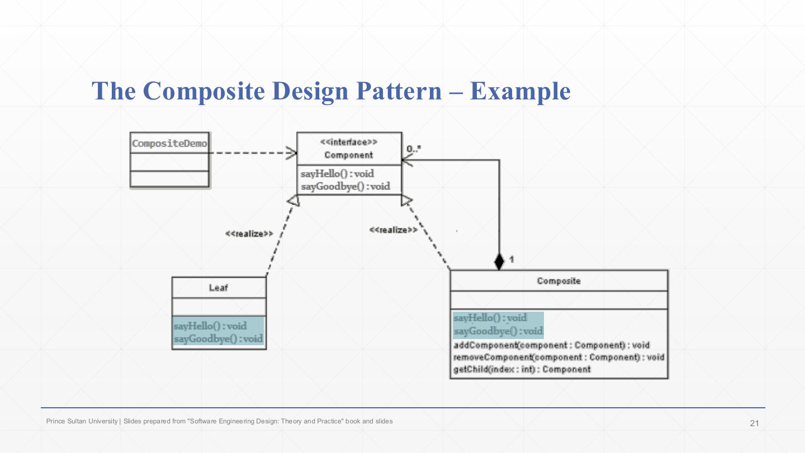
The example: «interface» Component with sayHello() and sayGoodbye(); Leaf and Composite both realise it; Composite holds 0..\* Components; CompositeDemo is the client. The highlighted methods are the ones each class implements.
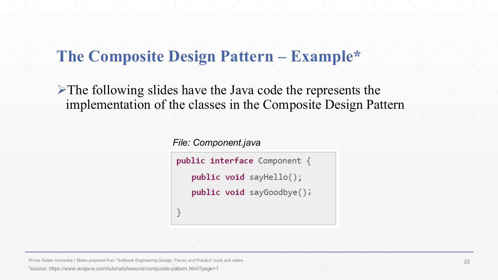
Component.java:
| Code | What it does |
|---|---|
public interface Component { public void sayHello(); public void sayGoodbye(); } | The operations every node, leaf or composite, supports. |
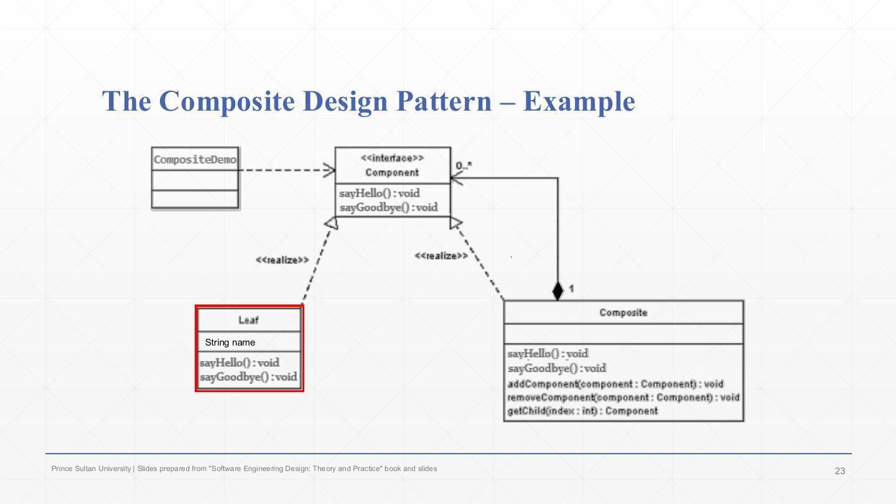
The diagram with Leaf outlined: it has a String name and implements sayHello() and sayGoodbye().
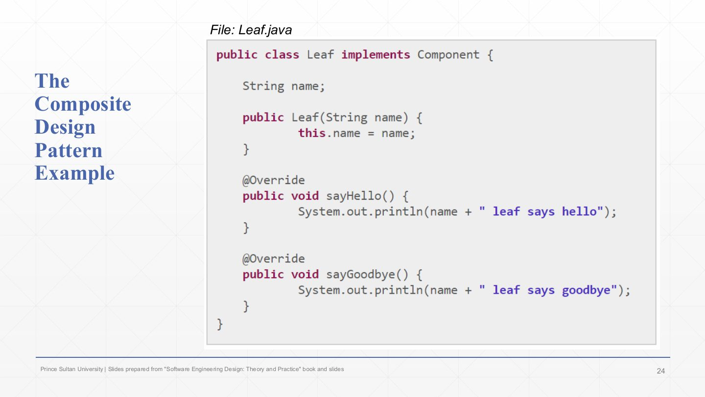
Leaf.java:
| Code | What it does |
|---|---|
public class Leaf implements Component { String name; | A leaf has its own data and no children. |
public Leaf(String name) { this.name = name; } | |
@Override public void sayHello() { System.out.println(name + " leaf says hello"); } | Does the work itself. |
@Override public void sayGoodbye() { System.out.println(name + " leaf says goodbye"); } } |
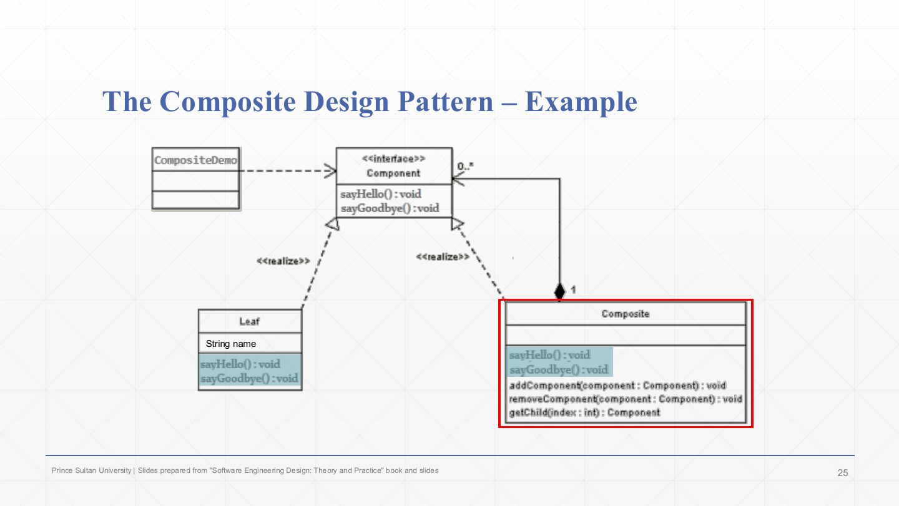
The diagram with Composite outlined: it implements sayHello() and sayGoodbye() plus the child-management methods addComponent(), removeComponent() and getChild().
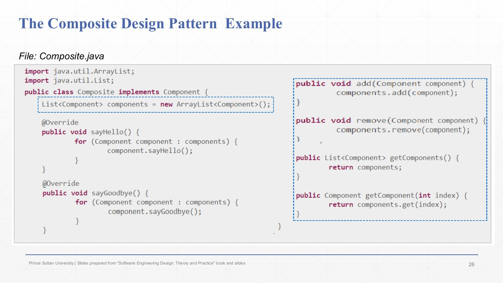
Composite.java:
| Code | What it does |
|---|---|
public class Composite implements Component { | A composite is also a Component, so it can be nested. |
List<Component> components = new ArrayList<Component>(); | Its children: leaves or other composites. |
@Override public void sayHello() { for (Component component : components) { component.sayHello(); } } | Forward the call to every child: this loop is the recursion. |
@Override public void sayGoodbye() { for (…) { component.sayGoodbye(); } } | |
public void add(Component component) { components.add(component); } | Child management. |
public void remove(Component component) { … } getComponents() { … } getComponent(int index) { … } } |
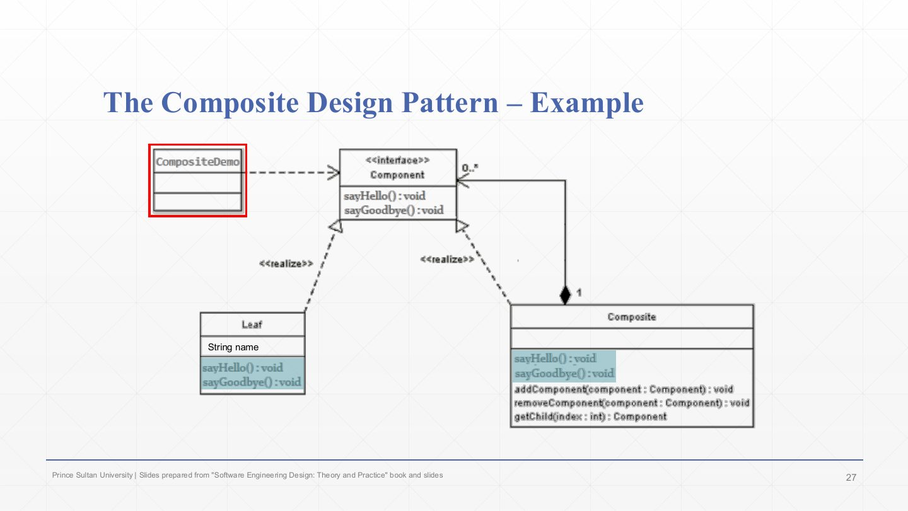
The diagram with the client CompositeDemo outlined: it depends only on Component, though it builds the tree from Leaf and Composite objects.
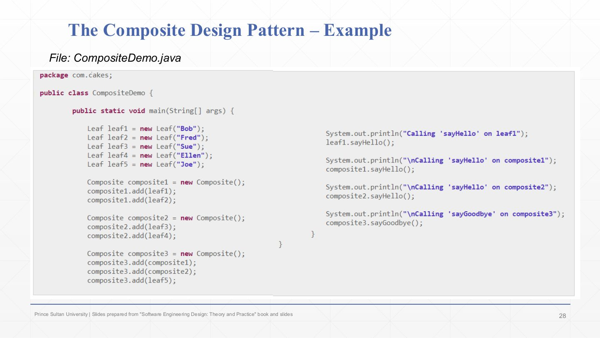
CompositeDemo.java:
| Code | What it does |
|---|---|
Leaf leaf1 = new Leaf("Bob"); … leaf5 = new Leaf("Joe"); | Five leaves: Bob, Fred, Sue, Ellen, Joe. |
Composite composite1 = new Composite(); composite1.add(leaf1); composite1.add(leaf2); | composite1 = {Bob, Fred}. |
Composite composite2 = new Composite(); composite2.add(leaf3); composite2.add(leaf4); | composite2 = {Sue, Ellen}. |
Composite composite3 = new Composite(); composite3.add(composite1); composite3.add(composite2); composite3.add(leaf5); | composite3 = {composite1, composite2, Joe}: a tree two levels deep. |
leaf1.sayHello(); composite1.sayHello(); composite2.sayHello(); composite3.sayGoodbye(); | The same calls on a leaf and on composites. |
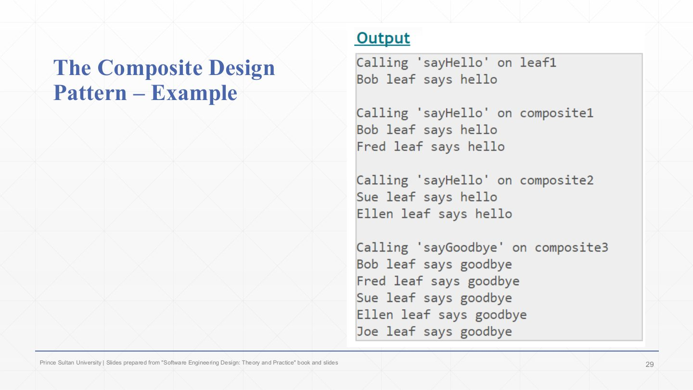
The output: sayHello on leaf1 prints “Bob leaf says hello”; on composite1 prints Bob and Fred; on composite2 prints Sue and Ellen.
sayGoodbye on composite3 prints goodbye from all five leaves (Bob, Fred, Sue, Ellen, Joe): one call at the root reached every nested leaf, because each composite forwarded it to its children.
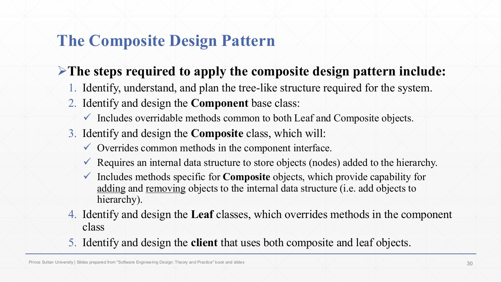
1. Identify and plan the tree-like structure the system needs.
2. Design the Component base class with the overridable methods common to leaves and composites.
3. Design the Composite class: it overrides the common methods, keeps an internal data structure for its child nodes, and adds methods to add and remove children.
4. Design the Leaf classes, which override the component’s methods.
5. Design the client, which uses both composite and leaf objects.
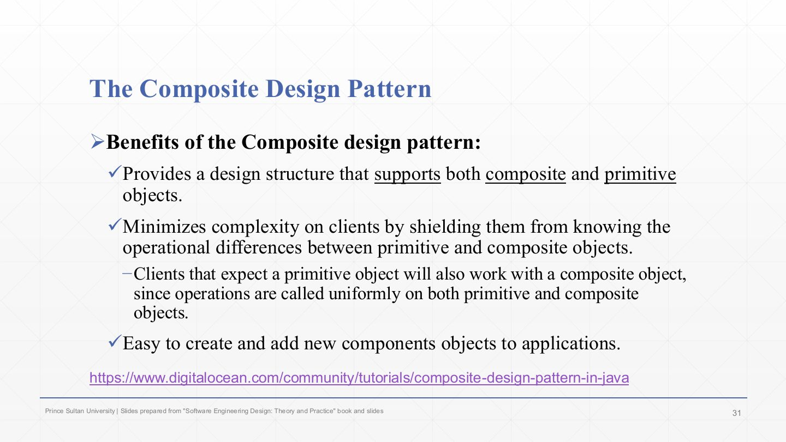
It gives one structure that supports both composite and primitive (leaf) objects.
It minimises complexity for clients: they don’t need to know whether they hold a primitive or a composite, because operations are called the same way on both. A client written for a single object also works with a whole group.
New component types are easy to add without changing client code. (The trade-off: a general Component interface can make it hard to restrict which children a composite may hold.)
Give two benefits of the Composite pattern.
Clients treat single objects and groups uniformly (simpler client code); it supports both primitive and composite objects in one tree structure; new component types can be added easily.
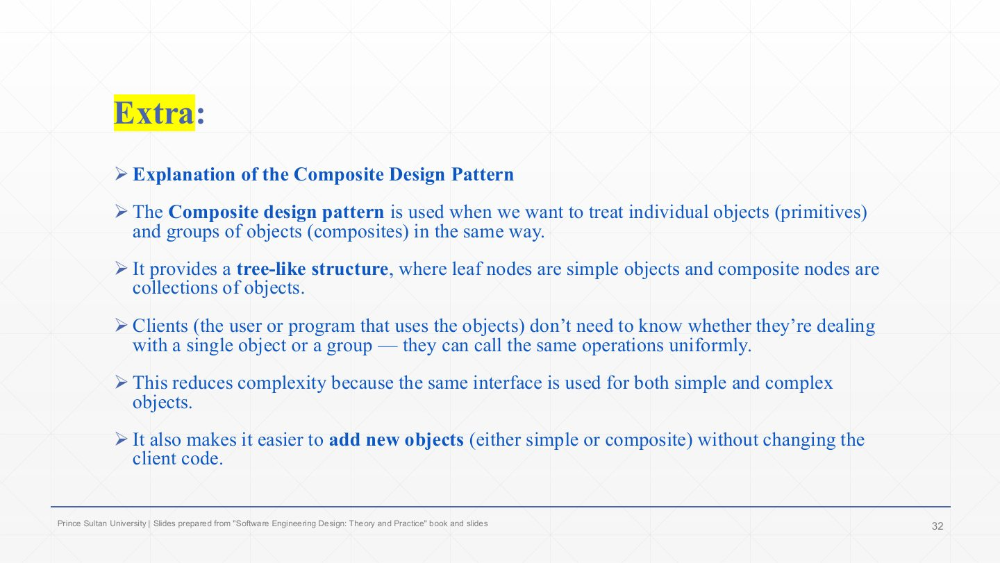
Composite is used to treat individual objects (primitives) and groups (composites) the same way.
It gives a tree: leaves are simple objects, composite nodes are collections.
Clients call the same operations uniformly, which reduces complexity and makes it easy to add new simple or composite objects without changing client code.
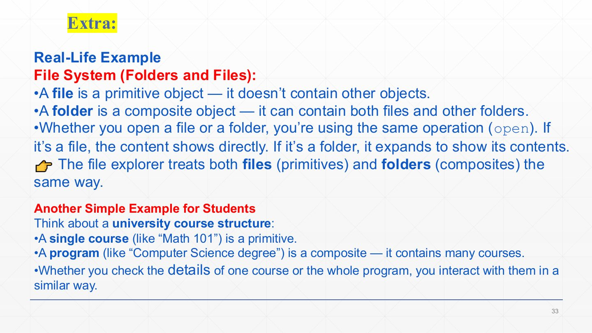
File system: a file is primitive (contains nothing), a folder is composite (contains files and other folders). The same “open” operation shows a file’s content or expands a folder: the file explorer treats both the same way. This is exactly the Final 252 question.
University: a single course (Math 101) is primitive; a programme (a CS degree) is composite, containing many courses. Checking the details of one course or a whole programme works the same way.
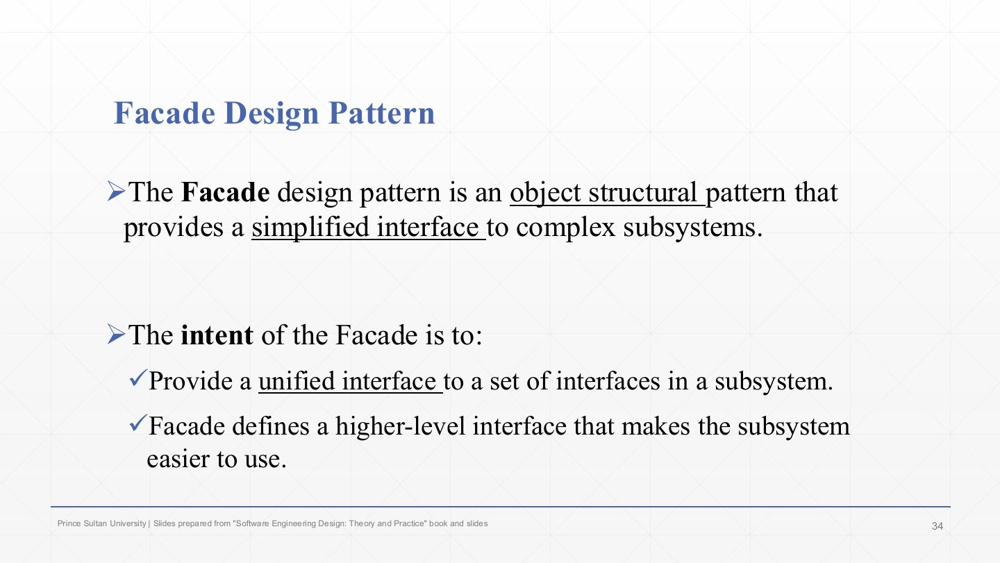
Facade is an object structural pattern that provides a simplified interface to complex subsystems.
Intent: provide a unified interface to a set of interfaces in a subsystem; the facade defines a higher-level interface that makes the subsystem easier to use. Like a hotel reception desk: one place to ask, many departments behind it.
Providing one simple interface to a set of complex subsystem classes is the:
A. Facade pattern
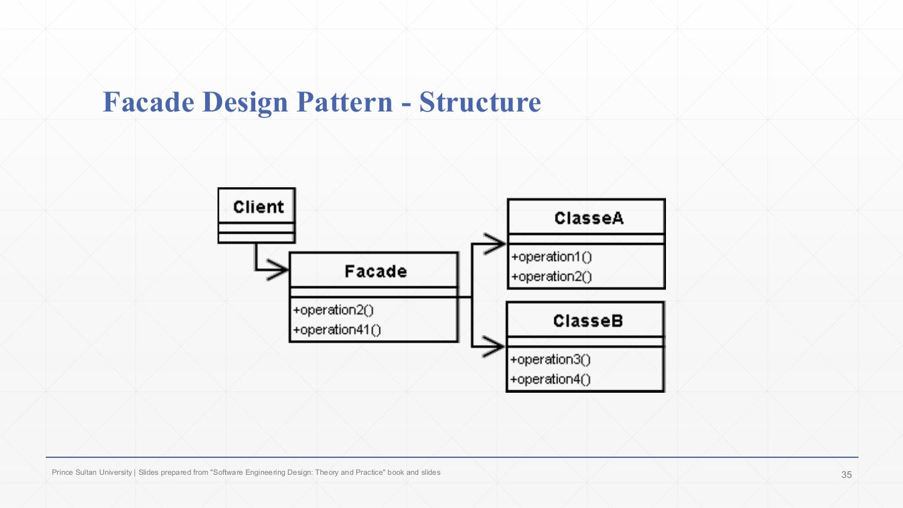
The structure: the Client depends only on the Facade, whose methods (operation2(), operation41()) are implemented by calling ClassA and ClassB in the subsystem (operation1()…operation4()). The client never touches ClassA or ClassB directly.
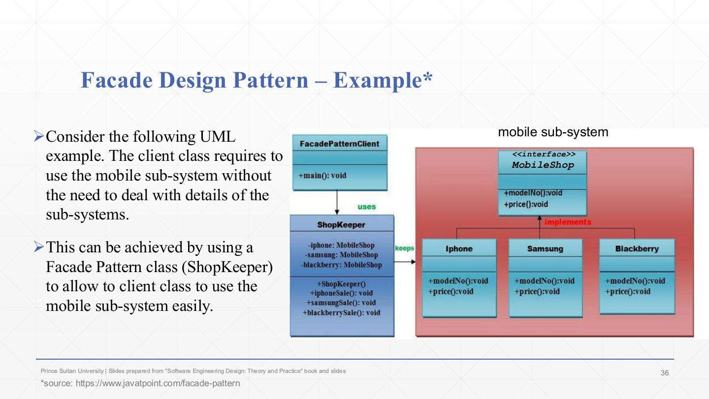
The example (from javatpoint): a mobile subsystem with «interface» MobileShop (modelNo(), price()) implemented by Iphone, Samsung and Blackberry.
The client (FacadePatternClient) shouldn’t deal with those details, so a facade class, ShopKeeper, keeps one of each phone and offers simple methods: iphoneSale(), samsungSale(), blackberrySale().
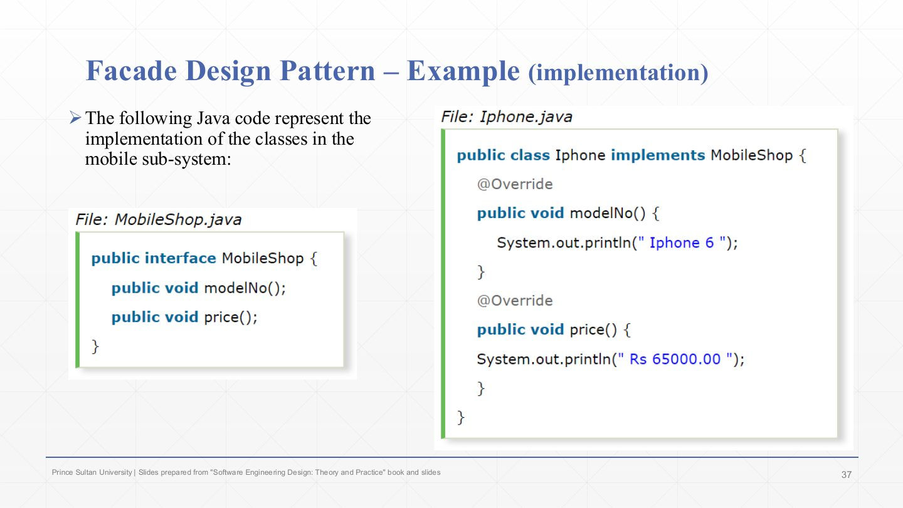
The subsystem:
| Code | What it does |
|---|---|
public interface MobileShop { public void modelNo(); public void price(); } | The subsystem interface. |
public class Iphone implements MobileShop { modelNo() { …" Iphone 6 "… } price() { …" Rs 65000.00 "… } } | One subsystem class. |
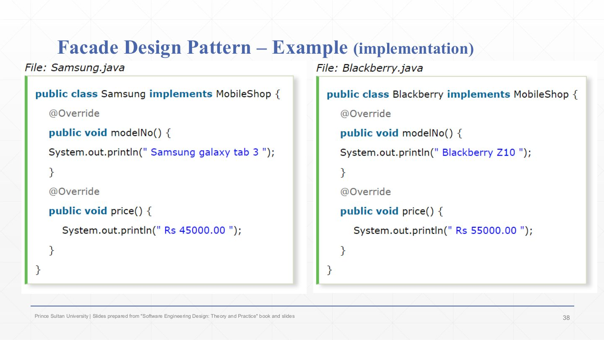
Samsung prints “Samsung galaxy tab 3” and “Rs 45000.00”; Blackberry prints “Blackberry Z10” and “Rs 55000.00”. Same interface, three classes the client would otherwise have to know.
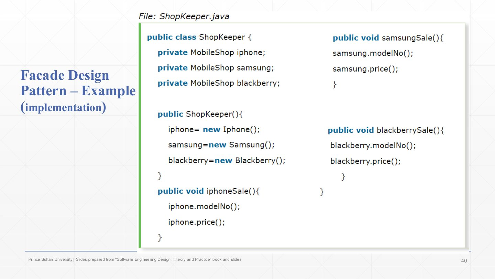
The facade:
| Code | What it does |
|---|---|
public class ShopKeeper { private MobileShop iphone; private MobileShop samsung; private MobileShop blackberry; | It holds the subsystem objects. |
public ShopKeeper() { iphone = new Iphone(); samsung = new Samsung(); blackberry = new Blackberry(); } | And creates them, so the client doesn’t have to. |
public void iphoneSale() { iphone.modelNo(); iphone.price(); } | One task-level method = the right sequence of subsystem calls. |
public void samsungSale() { … } public void blackberrySale() { … } } |
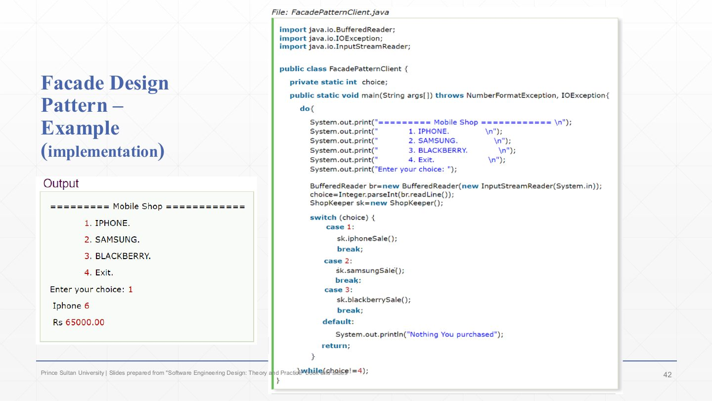
The client:
| Code | What it does |
|---|---|
ShopKeeper sk = new ShopKeeper(); | The only subsystem-related class it knows. |
switch (choice) { case 1: sk.iphoneSale(); break; case 2: sk.samsungSale(); break; case 3: sk.blackberrySale(); break; … } | A menu: 1 iPhone, 2 Samsung, 3 Blackberry, 4 Exit. |
Output for choice 1: “Iphone 6” and “Rs 65000.00”.
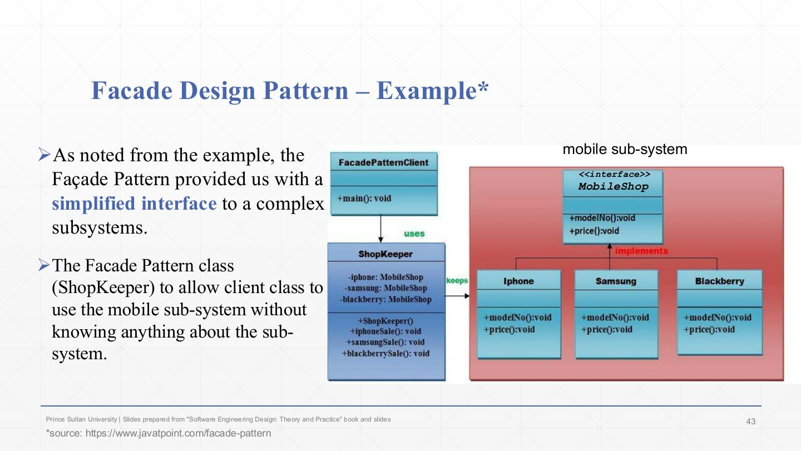
As the example shows, the facade gave the client a simplified interface to a complex subsystem.
ShopKeeper lets the client use the mobile subsystem without knowing anything about it: which classes exist, how they are created, or which methods to call in which order.
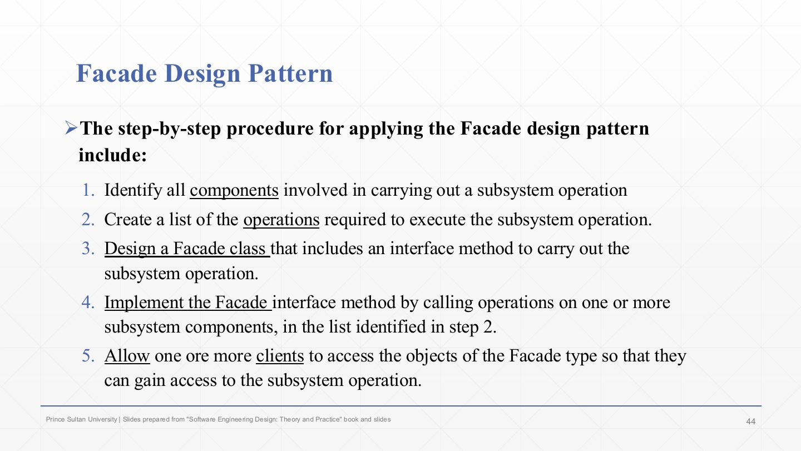
1. Identify all components involved in carrying out a subsystem operation.
2. List the operations required to execute it.
3. Design a facade class with an interface method for that subsystem operation.
4. Implement that method by calling the operations from step 2 on the subsystem components.
5. Let clients use the facade object to reach the subsystem operation.
True or false: Adapter changes an interface to match what a client expects, while Facade simplifies access to a whole subsystem.
True
How do Adapter and Facade differ?
Adapter converts one existing interface into a different interface that a client already expects (making incompatible classes work together). Facade defines a new, simpler, higher-level interface over many subsystem classes so clients don’t need to know them. Adapter wraps one class to fit; Facade wraps a subsystem to simplify.
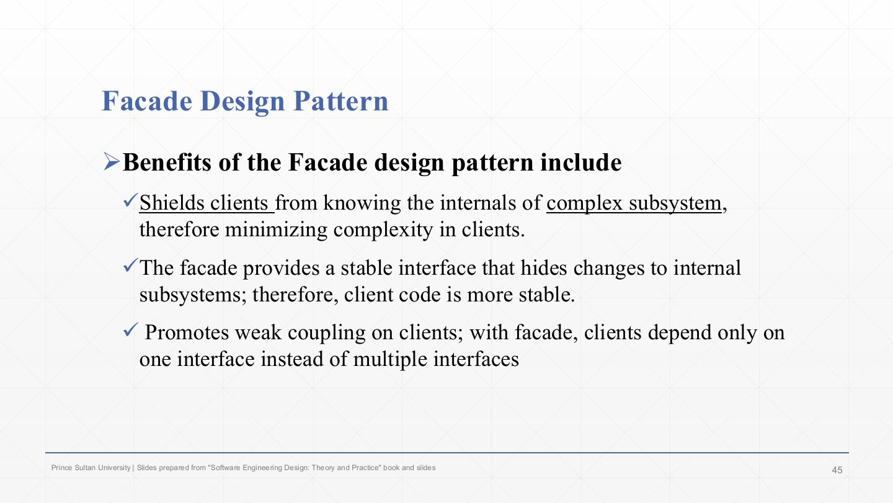
It shields clients from the internals of a complex subsystem, reducing client complexity.
It provides a stable interface that hides internal changes, so client code is more stable.
It promotes weak coupling: clients depend on one interface instead of many. (Keep facades focused on related tasks so they don’t become “god objects”.)
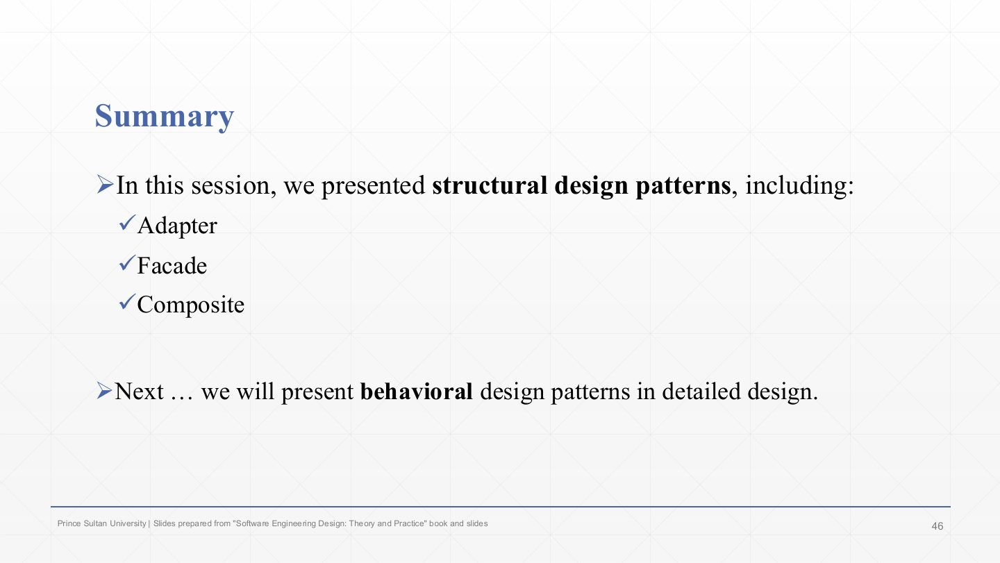
Structural patterns covered: Adapter (translate an interface), Facade (simplify a subsystem), Composite (treat trees uniformly).
Next: behavioural design patterns.